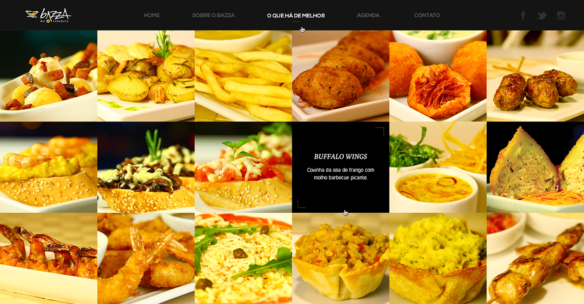
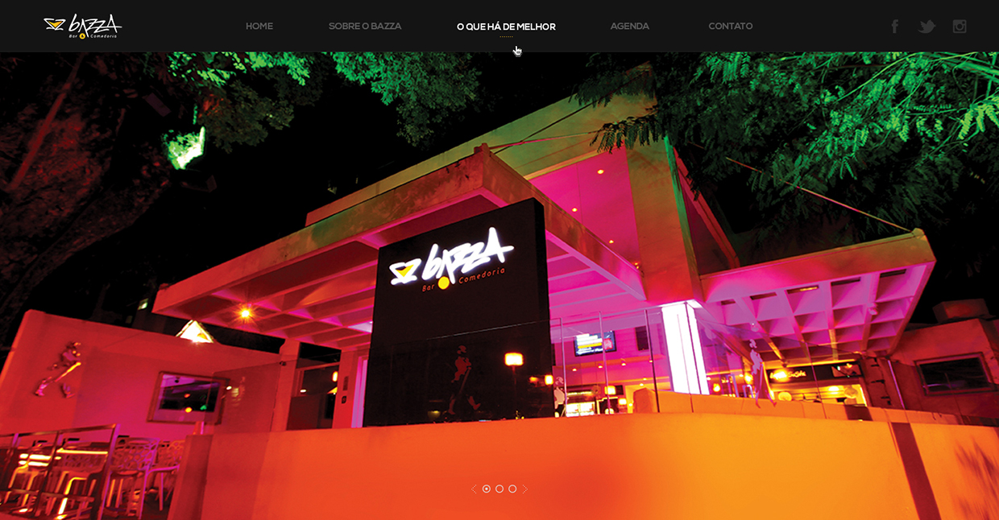
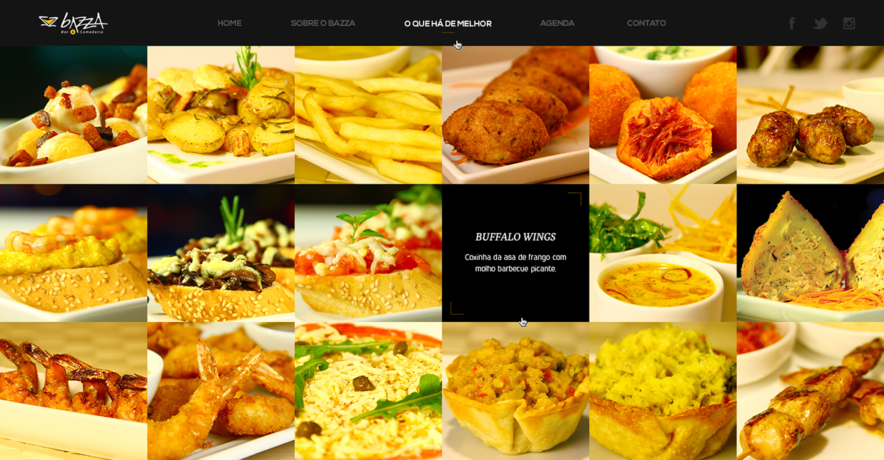
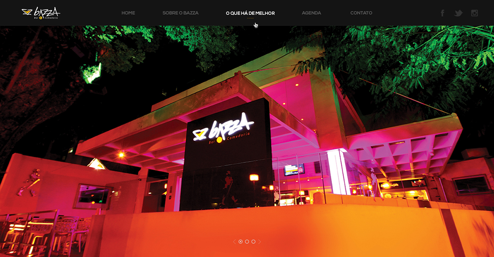
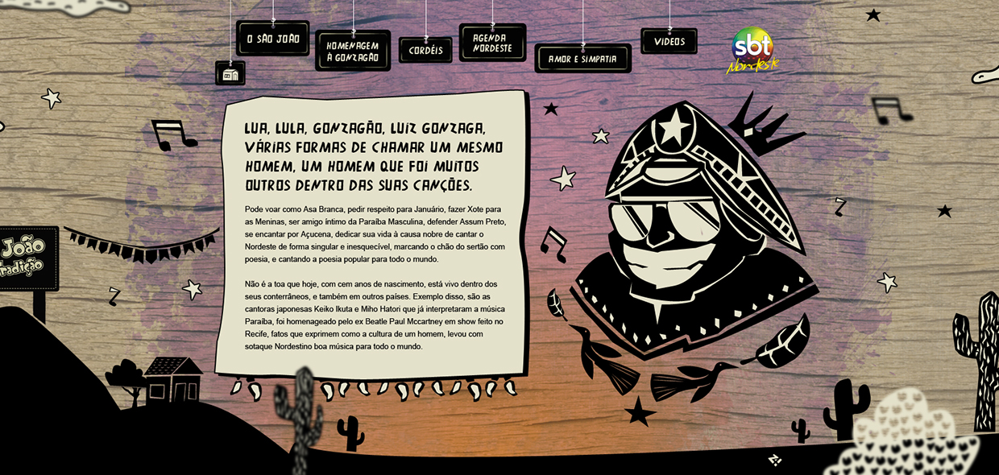
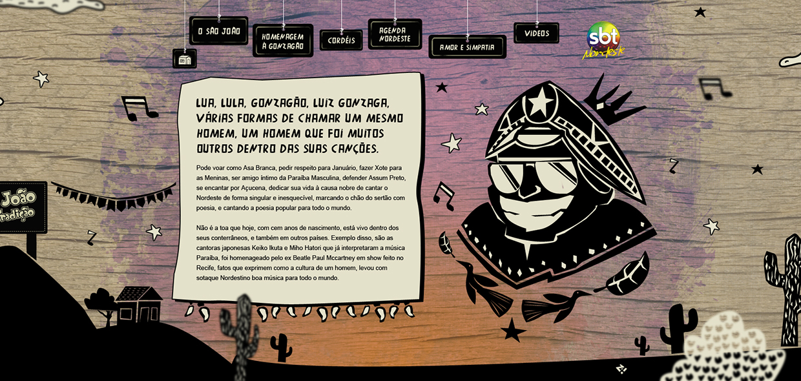
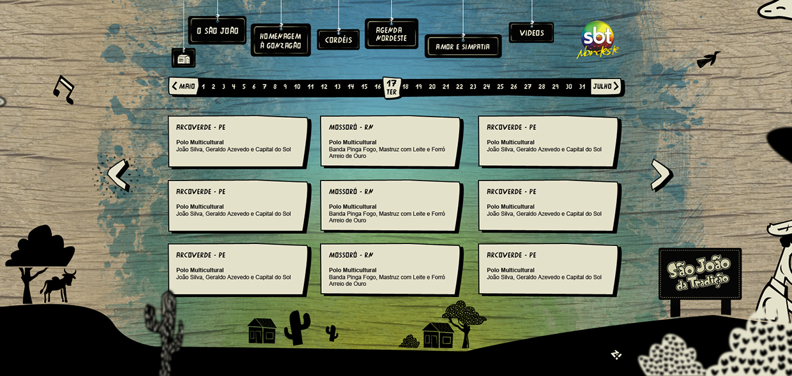
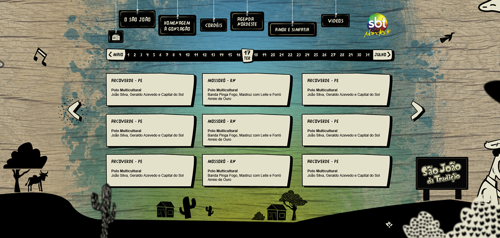

The Daisy — A gastro pub unlike any other in New York City
With a cool and confident atmosphere, The Daisy is an Agave Gastropub located in the Upper East Side featuring craft cocktails derived from Agave spirits paired with a eclectic food menu. The goal of this project was to design a femminine, vintage-classic looking website that would translate into all of the different touchpoints of a Gastropub that brings exceptional features and an exclusive mix of American and Mexican cuisine.
As part of the deliverables, I drew wireframes and designed the views of all pages and states of the web site for desktop and mobile devices.


Designing end-to-end user experience of a new internal web application
This project is under NDA (non-disclosure-agreement). Only process related information can be exposed. To comply with my confidentiality agreement I have omitted and appropriated confidential information. These designs are a reinterpretation of the original.
This is a team project working with one of the biggest worldwide technology companies on the design of a system application tool using Agile methodologies. My main role in this project was to help build a consistent UI Pattern Library built on top of the Bourbon and Ember.js frameworks, as well as a reusable set of accessible and content oriented markup patterns.
A series of methods were employed across different phases of the project, such as:
Wireframe prototyping
We opted for a lean approach which emphasised rapid sketching, prototyping, user feedback and design mockups. This created early team‐wide alignment, stimulated great ideas and created a strong sense of ownership across different disciplines within the organisation.
I generated rapid-prototyping user experience, high-fidelity mockups, interactive web and mobile prototypes through a mix of paper, Axure, Balsamic, Graffle, Sketch, and Photoshop, allowing the design team to tangibilize ideas.
Internal presentation and testing were performed on a daily basis during UI/UX sync-up meetings with design teams in Brazil and remotely. Those moments helped to validate early designs through contextual interview, and to make decisions on the fly. In addition, with wireframe and mockups in hand the development team could estimate the stories more accurately.
Requirement Analysis
Meeting with key stakeholders, PO and the UX team helped to understand the business challenges. Together we aligned the expectations and constructed a shared vision for the project. Following this, I analysed requirements and estimated the UI development efforts, planned the components implementation during a design sprint according to the features developed during an epic.
I entered all the requiremets into a spreadsheet and prioritised them againts our user needs, tech feasibility, and roadmap. I wrote user stories, acceptance criteria, and prioritized backlog based on project's objectives. At the end of the design phase, I ensured project requirements meet the documented acceptance criteria.
User Interface Design
The user stories and the understanding the of the core functionalities of the application were fundamental to develop the look and feel of the components. I started rapidly generating UI options using Sketch as soon as our team came up with the need of a new component - constantly syncing with the UI team to gather feedback still during the first cycle of the development proccess.
System icons were inherited from a meaningful SVG library provided by one of the client’s internal design teams, so that way we kept the consistency of our library with the high-quality level graphics users are accustomed to.
The final designs and components were documented in a design library kept on Sketch that our UI used to build new mockups, which inluced stylistic guidelines for typography, grids and color. I was responsible for keeping this library up to date and for then handing in the component’s pieces to another designer so that he could translate the interface into a UX library built on Axure.
User Interface Engineering
Most part of the designs were collaboratively authored using Git. I helped with front end development by transforming the component's designs into HTML/CSS templates. With hands-on coding using HTML5, CSS3 (SASS and LESS), and the 'Block, Element, Modifier' (BEM) methodology, I provided and validated together with the DEV team the necessary pieces of markup used to build the components.
The code guidelines were kept in collaborative library, and incorporated patterns into a more holistic style guide with UI concepts and branding recommendations. The library was constantly updated as our team designed and defined the necessary requirements for new components.
I was also responsible for doing code review on Gitlab of the markup and CSS built by the DEV team during the development sprint, getting feedback on something that we recently worked on allowing us to have context and structure in mind of the code, and to catch mistakes before production. Using Gitlab's comment feature for commits to make comments about the pushed code, I ensured that the coding guidelines were being followed and our application was constantly updated with the most recent UI components.
Sharing our knowledge helped to build a strong relationship between design and development teams. We created an environment to share ideas, and during each sprint a FE/UI meeting was scheduled to touch-base the team’s expectations, debate about the best coding approach and set deadlines for the delivery of the coded UI components. As a UI designer, my role was much more than to draw eye-catching layouts: our way of working allowed to form a partnership between design-aware developers and code-inclined designers.
Web Accessibility
Accessibiliy is at the heart of the client’s products - intuitive and easy to use hardware and software. For this project, I was one of the team members responsible for designing the application's User Interface Guidelines for web accessibility. It was extremely important to advocate and support web accessibility methods as a core step on the software development process, and to include into every piece of design not only accessible features - but accesible principles.
I coded with semantically meaningful HTML and designed the UI components for impaired users. I widely used ARIA specifications and it was really nice to have the help of an Accessibility Guru in our team to support our coding and interaction decisions.
The use of color was a key point for us, and we constantly focused on providing colorblind users a meaningful experience since most color blind people have difficulty distinguishing red from green. I tested the interface using Color Oracle, to make sure colors were not the only way users could distinguish bethween states or values - and of course, using a combination of iconography, text and color to indicate interactive elements.
I also made design considerations and evaluate the system's accessibility using assistive technologies.
Documentation
Artifacts from all phases were documented in a form of descriptive memorial so developers were able to work on a second part of the project.
Curta Pernambuco - A guide to your travels through the coastal state in northeast Brazil
The Northeast of Brazil is known for its white-sand beaches, swaying coconut palms, blue-green water, massive dunes, and giant capital cities of festivals. The state of Pernambuco has authentic spots that yet need to be explored. With this idea, the Curta Pernambuco project provides via a website and printed magazine tourist information about cultural and gastronomical experiences, itinerary tips, sights, recipes of delicious local food and more, letting people in on all the great stuff that's hidden nearby.
Back in 2012, Curta Pernambuco needed an iOS app for their launch. I designed the app interface and worked closely to the account manager to craft the existing information into a consistent and easy to navigate app. We wanted to create something that tourists and enthusiastic locals would love using, so the brand identity was strongly applied to the UI: bold signature color, dark pallete, on which the bright colorful map pins and icons would pop.
The core of the app are actual locations, which are highlighted in a map determined by the user’s geolocation. Looking for a rental car? You got it. What about trying seafood on a restaurant in front of the beach? The app provides the best tips and a list of must-visit places, all listed by categories. A short description of what to do and see on each 'point of interest' is also provided, as well as the options to mark the location as favorite and to share on twitter or facebook.
Users can pull together a list of places to visit that's easy to create or consult on the go. We decided to combine the kinds of content that were being saved - venues, tips, routes, images. In total, I've created multiple screens of the app interface, with dozens of different interactions and states.
BAZZA — Designing a sophisticated experience for a unique venue
Elected by the VEJA RECIFE magazine as the best new restaurant of 2012, Bazza Bar & Comedoria is a sophisticated venue, ideal for those who enjoy the best of contemporary cuisine combined with good music.
I defined the visual language, drew wireframes and finally designed the pages of the web site.
 





São João da Tradição — Promoting Brazil's popular northeastern culture
SBT Nordeste, affiliate of SBT - Brazil's second biggest television network, paid tribute to the centenary of Luiz Gonzaga, a Brazilian singer, songwriter, musician & poet, and one of most influential figures of Brazilian popular music in the twentieth century.
Using parallax animations to give movement to the scenarios, the website tells lifestory through the events of Saint John festivities.
The website is part of the digital Media & Entertainment business plan of the network.
 


 
